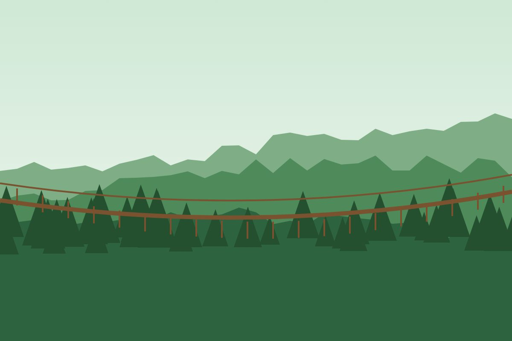
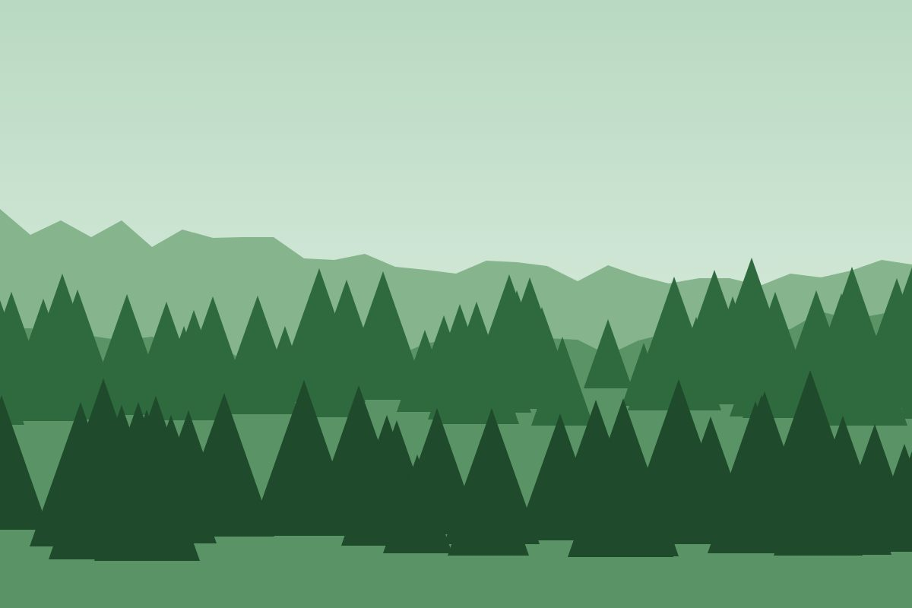
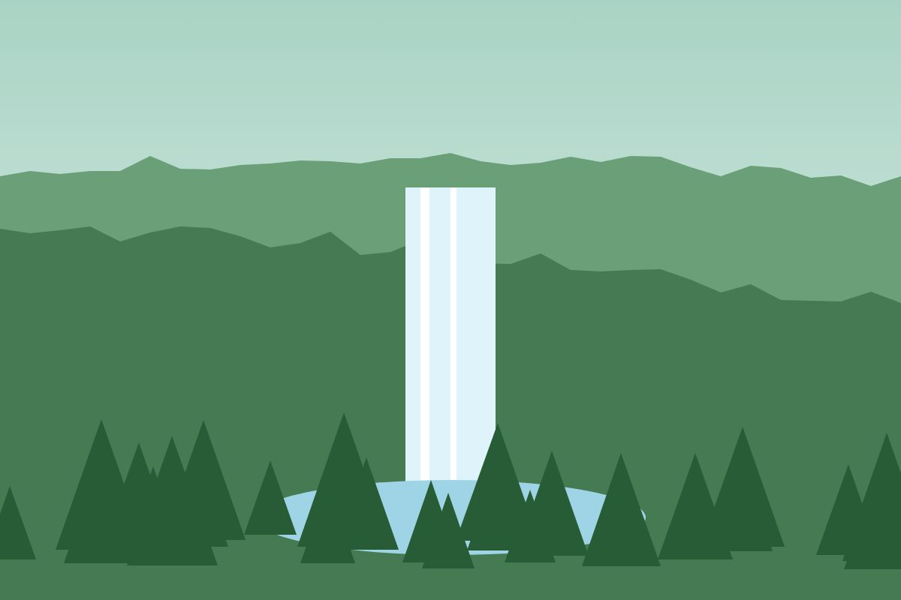

Walk the canopy
The walkway is 160 metres long and hangs 70 metres above a valley. Walks start every hour from 8:00, with a guide.
What you will see in one of the oldest rainforests in Africa, before you travel.



The walkway is 160 metres long and hangs 70 metres above a valley. Walks start every hour from 8:00, with a guide.
More than 300 bird species live in Nyungwe. This is what you will hear in the morning.